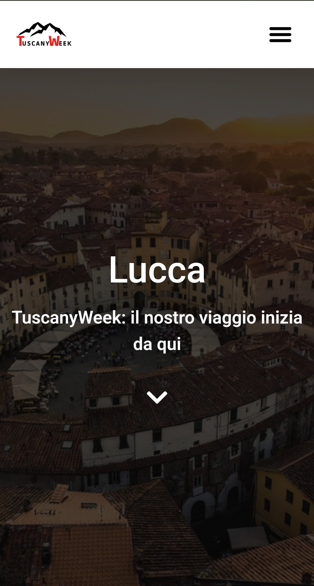
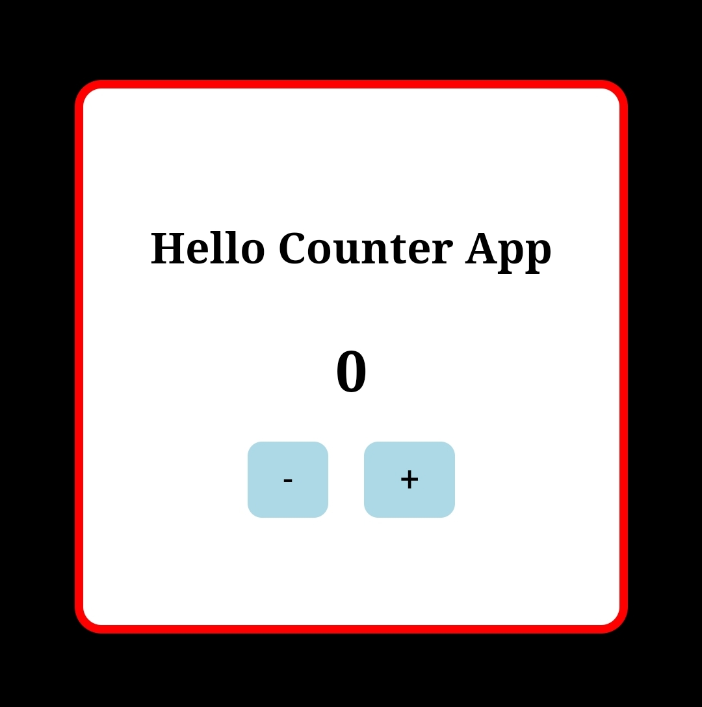
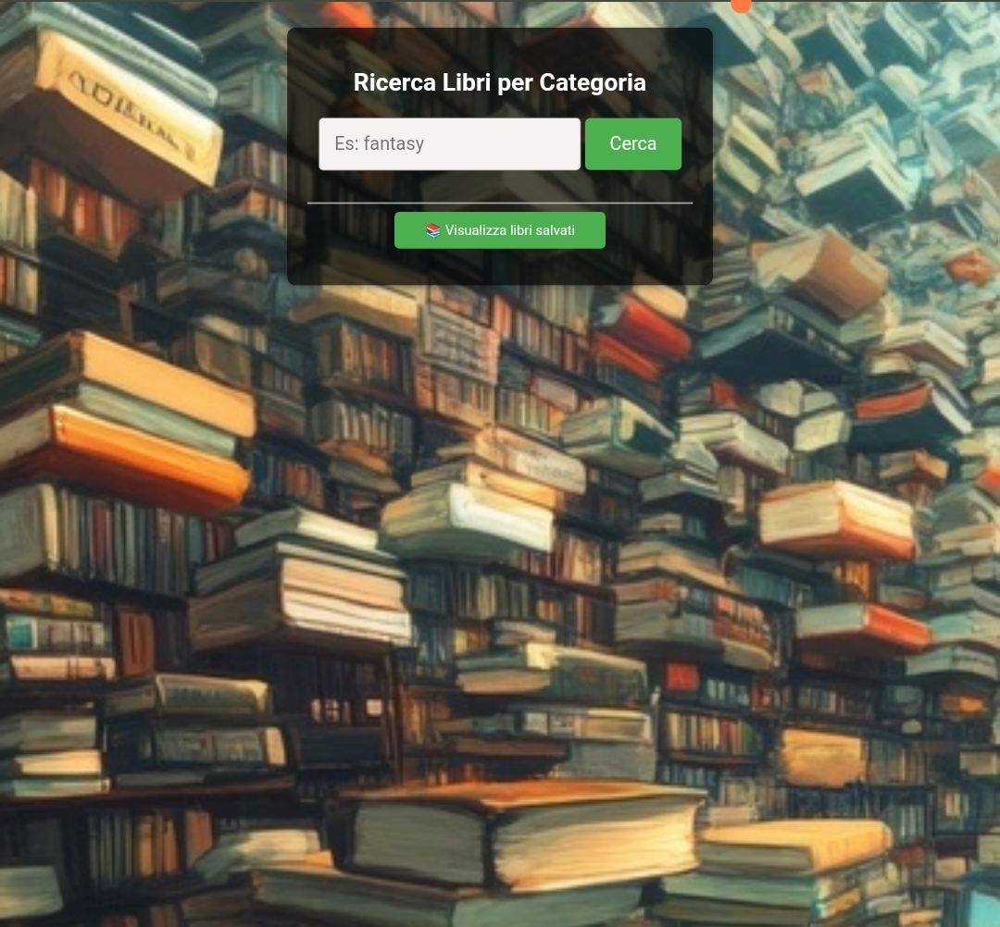
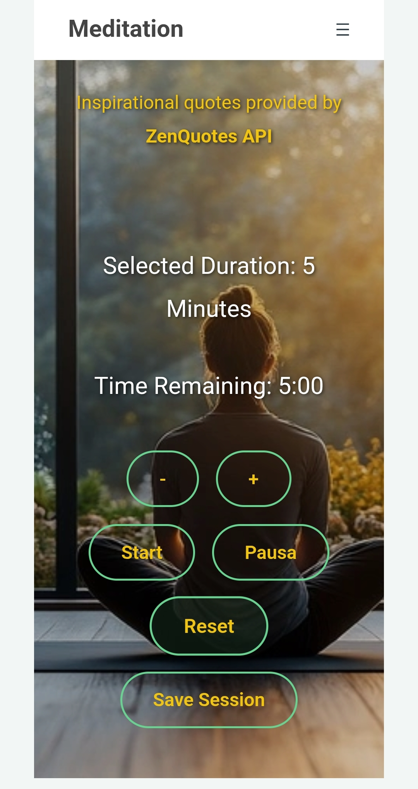
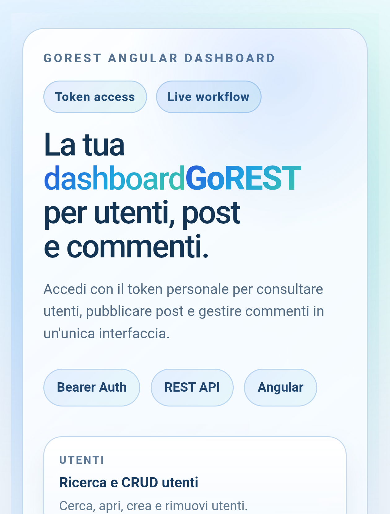

GreenHeart
Landing page realizzata in HTML e CSS per un progetto reale, con attenzione a layout, impatto visivo e responsive design.
Landing page realizzata in HTML e CSS per un progetto reale, con attenzione a layout, impatto visivo e responsive design.

Blog WordPress dedicato ai luoghi, alle tradizioni e ai paesaggi unici della Toscana, con focus su contenuti e leggibilità.

Applicazione JavaScript con manipolazione del DOM e interfaccia essenziale, costruita per allenare logica e interazione utente.

Applicazione per la ricerca di libri sviluppata in JavaScript, pensata per esercitare fetch, interfaccia e gestione dei risultati.

Applicazione dedicata al benessere e alla meditazione, pensata per offrire un'esperienza digitale rilassante e focalizzata.

Applicazione che permette alle persone di registrarsi, condividere post e pubblicare le proprie idee in modo semplice.